In China Employee Termination: Pulse Control-Room Log for Foreign Employers (2026 Hourly Run)
Key takeaways
- In China termination work, the highest risks are usually operational signals that teams ignore until late stage.
- A control-room log helps foreign operators convert legal context into daily go/pause/escalate decisions.
- The critical quality gate is coherence across route rationale, evidence file, communication wording, and payroll settlement treatment.
- Local uncertainty is not noise; it is a decision variable that should be logged and owned.
- Legal depth supports the process, but execution discipline determines final defensibility.
Pulse opener: what this hour’s control room should focus on
Most multinational teams handling China terminations already have policies, external counsel, and experienced managers. Yet avoidable exposure still appears because control signals are reviewed in separate lanes. Legal sees route ambiguity, HR sees communication pressure, payroll sees unresolved settlement assumptions, and local teams see city-level uncertainty. When those signals are not synthesized in one operating view, cases move forward with hidden contradictions.
This run rotates to a “control-room log” format: one concise dashboard-like narrative that pairs each signal with an immediate decision action. The target audience is foreign clients who need practical clarity first. Legal background remains in a secondary appendix.
Plain-language legal context first
China termination decisions are generally route-based under labor law and related implementation regulations. In disputes, outcomes often depend on whether the employer can demonstrate consistency between the stated legal route, evidence chain, process behavior, and final settlement handling.
For non-China teams, the plain rule is simple: if one function is uncertain, the case is not fully certain. Treat unresolved contradictions as risk controls to close, not as timeline inconveniences.
Control-room log: 6 signals and the decision each one requires
Log Item 1 — Route confidence below “clear”
Signal: legal describes the route as likely, but not stable.
Decision: move case to pause until unresolved assumptions are listed and owner-assigned.
Why it matters: route ambiguity often creates downstream narrative edits that weaken coherence.
Log Item 2 — Evidence integrity is partial
Signal: key records exist, but traceability or ownership is incomplete.
Decision: move case to controlled hold; enforce evidence index with owner/source/status fields.
Why it matters: in dispute settings, undocumented assumptions are treated as weaknesses, not neutral gaps.
Log Item 3 — Communication pack diverges from legal wording
Signal: HR script and legal rationale are “similar,” not identical.
Decision: freeze release, reconcile to one approved narrative version, and re-log approval timestamp.
Why it matters: small wording drift can become major consistency challenges under review.
Log Item 4 — Payroll asks unresolved settlement questions late
Signal: final component or tax logic remains open near release cutoff.
Decision: pause and bring payroll upstream into approval gate; no employee-facing release before settlement logic is signed.
Why it matters: payroll settlement records can materially affect dispute posture.
Log Item 5 — Local uncertainty flagged without executive owner
Signal: local team notes city-level risk, but decision ownership is unclear.
Decision: escalate with options, exposure range, and explicit risk acceptance owner.
Why it matters: unresolved local variance is a top source of cross-border governance blind spots.
Log Item 6 — Closure marked complete without retrieval test
Signal: case archived, but no proof of first-pass retrievability.
Decision: reopen to post-release hold until retrieval test passes and owner signs closure.
Why it matters: defensibility depends on usable records, not just stored records.
Practical implications for foreign operators
This control-room model gives global teams a common operating language across legal, HR, payroll, and local stakeholders. It reduces argument-driven escalation and replaces it with condition-driven escalation. Instead of asking “Do we feel comfortable?” teams ask “Which log items are unresolved, who owns them, and what is the decision status?”
For foreign leaders, the immediate benefit is better visibility into true readiness. For operating teams, the benefit is fewer last-minute reversals. For finance, the benefit is reduced volatility from avoidable dispute handling and settlement rework.
Operations execution package
A) SOP by role ownership
Legal: define route type, confidence level, and non-negotiable assumptions; approve final narrative baseline.
HR: maintain chronology, communication controls, approval logs, and manager script discipline.
Payroll: validate settlement components, IIT assumptions, social insurance treatment, and release sequencing.
Manager: execute approved communication only; avoid informal promises.
Vendor/EOR: maintain handoff status fields and unresolved issue tracking across teams.
B) Document checklist and gate cutoffs
Mandatory release artifacts:
- route memo + confidence statement,
- evidence index with source traceability,
- timestamped approval log,
- aligned employee communication packet,
- settlement worksheet + tax notes,
- archive map + retrieval owner.
Gate cutoffs:
- Pre-gate: route/evidence must be complete.
- Coherence gate: legal/HR/payroll alignment pass required.
- Release gate: no unresolved critical log items.
- Closure gate: retrieval test pass required.
C) Exception pathways
Exception A: missing evidence near release → hold case, assign owner/date, escalate if deadline misses.
Exception B: narrative mismatch detected → freeze communication, reconcile master version, re-approve.
Exception C: payroll/legal settlement conflict → suspend release, require joint interpretation sign-off.
Exception D: local uncertainty unresolved → escalate with explicit risk-acceptance decision.
Exception E: retrieval failure at closure → reopen closure status and remediate archive integrity.
D) System controls and audit fields
Core fields for control-room tracking:
route_confidenceevidence_integritynarrative_alignmentsettlement_readinesslocal_uncertainty_ownerrelease_statusarchive_retrieval_pass
Control rules:
- block workflow progression when critical fields are incomplete,
- keep immutable timestamps on all overrides,
- report monthly recurrence by exception type and time-to-resolution.
Common mistakes and prevention
Mistake: treating “almost aligned” as aligned
Prevention: enforce exact narrative lock before release.
Mistake: reviewing signals in separate meetings
Prevention: run one cross-functional control-room review for active cases.
Mistake: using deadline pressure to waive unresolved items
Prevention: require explicit risk acceptance for any override.
Mistake: closing case files without retrieval proof
Prevention: make retrieval pass rate a governance KPI.
Mistake: underweighting local team warnings
Prevention: mandate uncertainty ownership and response deadline.
What to watch next
Foreign operators should track whether the same control-room log items recur by city, business unit, or manager cohort. Repeated recurrence usually indicates a structural process defect, not isolated execution mistakes. Teams should also monitor whether payroll and legal sign-offs remain synchronized as case volume grows; desynchronization is often an early indicator of future disputes.
FAQ
Is this control-room format a legal opinion?
No. It is an operational decision framework informed by legal and practitioner sources.
How often should teams run the control-room review?
For active cases, daily or near-release cadence is practical; for governance review, monthly trend checks are recommended.
What is the minimum viable version of this model?
Track route confidence, evidence integrity, narrative alignment, and settlement readiness in one shared log.
Does this framework replace local counsel?
No. It improves execution around legal advice and should be paired with local professional input.
What KPI should leadership start with?
Critical log-item closure rate before release, plus recurrence trend by signal category.
Is this usable for smaller foreign teams?
Yes. The model can be lightweight if ownership and gates are explicit.
Legal appendix (secondary depth)
1) Core legal anchors
The PRC Labor Contract Law and implementation regulations provide the statutory framework for employer termination logic and obligations. Supreme People's Court interpretations inform labor dispute application and evidence treatment.
2) Practitioner and market synthesis
Practitioner sources emphasize route discipline and cross-functional consistency. Market/payroll context supports early settlement/tax alignment as part of risk control.
3) Residual uncertainty
City-level practice may vary. High-exposure decisions should involve qualified local legal and payroll advice.
Source-fit note for this run
This run maintained the required source mix and rotated to a control-room log format to improve operational decision speed for foreign readers. Overlapping narrative from prior red-flag/Q&A formats was removed and translated into signal-action gating.
Disclaimer
This content is for informational purposes only and does not constitute legal, tax, payroll, accounting, or compliance advice. Employers should seek qualified local professional advice for specific cases.
Sources
- National People's Congress. Labor Contract Law of the PRC (English text). Accessed 2026-02-28: http://www.npc.gov.cn/zgrdw/englishnpc/Law/2007-12/13/content_1384064.htm
- State Council. Implementation Regulations of the Labor Contract Law (Decree No. 535). Accessed 2026-02-28: https://www.gov.cn/gongbao/content/2008/content_1124615.htm
- Supreme People's Court. Interpretation (I) on Application of Labor Dispute Law. Accessed 2026-02-28: https://www.court.gov.cn/fabu/xiangqing/243981.html
- China Briefing. Employee Termination in China. Updated 2025-10-17, accessed 2026-02-28: https://www.china-briefing.com/news/employee-termination-in-china/
- Littler. Key Recent Developments in China's Employment Law. Published 2024-03-20, accessed 2026-02-28: https://www.littler.com/news-analysis/asap/key-recent-developments-chinas-employment-law-china-us-comparative-perspective
- PwC. PRC Individual Taxes on Personal Income (Tax Summaries). Accessed 2026-02-28: https://taxsummaries.pwc.com/peoples-republic-of-china/individual/taxes-on-personal-income
Need local employment support in China?
If you need a compliance-first partner for hiring, payroll, and risk controls in China, China-Payroll.com can help evaluate the right setup.
Image Prompt Pack
Create a 16:9 hero image for article title: 'In China Employee Termination: Pulse Control-Room Log for Foreign Employers (2026 Hourly Run)'. Scene: global operations team evaluating workforce model options for China market entry. Include motifs: decision matri…